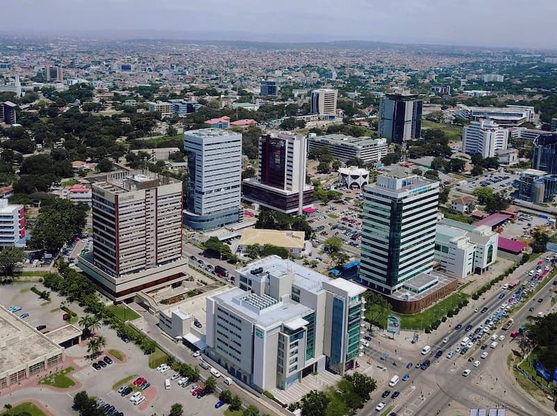

Accra is my favorite city because it is the capital city of Ghana and one of the most vibrant cities in the country. It is a beautiful place with a mixture of modern buildings, historical sites, markets, beaches, restaurants, and cultural attractions.
I also enjoy Accra because of its people, food, music, and lively atmosphere. The city has many interesting places to visit, including Independence Square, Labadi Beach, and the Kwame Nkrumah Memorial Park.
